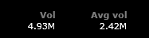

CheckMark Tutoring: How-To Guides for Canadians
CheckMark Tutoring: How-To Guides for Canadians *Note: the information below has been updated for 2018 (last update: March 2018)
ETFs stands for Exchange-Traded Funds. These are essentially the same as index funds (such as the TD e-series) with the main difference being that they are bought/sold like a stock on an exchange. Just like index funds, they will track common stock market indices such as the TSX/S&P Composite (Canadian stock market index) or S&P 500 (U.S. stock market index).
Q: So why would I want to invest in ETFs when I could invest in index funds such as the TD e-series funds?
There are a few advantages to owning ETFs as opposed to the TD e-series funds. ETFs usually have lower MERs (management expense ratios) meaning there are less fees associated with holding them. There is an approximately 0.30% difference in MER (aka fees) between ETFs (average of around 0.15% MER) and TD e-Series funds (average of around 0.45%). This means that on a portfolio of $5,000, you will be saving around $15 per year by using ETFs over TD e-series funds. Sounds like a small amount right? You'd be right! But let's say your portfolio was worth $100,000. Now, you would be saving $300 per year! As the size of your portfolio increases, the more worthwhile it becomes to switch to ETFs over index funds. If that $100,000 portfolio is being used for retirement savings, then $300 per year in additional MER adds up to $6000 over 20 years (+ the loss of compounding returns on the money that is lost through fees). I'd say it is worth considering the switch to ETFs at that point! However, the calculation in additional MER costs does not factor in that it costs $9.99 in brokerage commissions each time you sell ETFs (no cost to sell TD e-Series funds) and the additional work that is required to buy/sell (it's much easier to do with TD e-Series).
*Keep in mind that if you hold the TD e-Series funds in a non-registered account (meaning accounts that are not a TFSA, RRSP or RESP) and you have unreazlied capital gains (meaning you have never sold the funds but they have gone up in value) on those funds, then the only way to move the value of these funds into ETFs is to sell the TD e-Series funds to get cash and then use the cash to buy ETFs. Unfortunately, this will lead to a capital gains tax for the tax year that you sell them in since you have sold the funds and made a profit. Half (50%) of the capital gains on the sale of your TD e-Series funds will be taxed at your marginal tax rate (e.g. 32% if you are making $80,000 in Ontario), while you will not have to worry about taxes on the other 50% (effectively meaning that you paid a 16% tax on your capital gains). You will have to keep your tax rate in mind if/when you decide to sell your TD e-Series funds and move to ETFs in a non-registered account. For example, it might be better for your taxes to sell some your TD e-Series funds this tax year (and ideally look for an investment that could be sold for a capital loss to negate the gain) and do this again for the next year. If you sell everything in one tax year then all of the capital gains will be occur in the same tax year which will increase your income and move you up to a higher tax bracket. This means more taxes and who wants that! So it may be beneficial to sell investments off slowly over the course of a few years to offset any losses/gains. This is not something you need to concern yourself with if the money is in a TFSA (as there will be no capital gains tax when you sell investments in a TFSA).
If you do decide to sell the TD e-Series funds in a non-registered account, you should note that all of the ACB calculations should be done at the fund level and represented in the book value (ACB is important in determine the capital gains tax that you will pay; see this webpage for more information). However, if you want to be 100% certain that your ACB is correct, then you could track it.
Q: Ok you've sold me on ETFs! Now how do I go about investing in ETFs then?
 You can invest in ETFs at most discount brokerages, which are just places that allow you to invest in the stock market without personalized advice (e.g. TD Direct Investing [formerly TD Waterhouse]).
You can invest in ETFs at most discount brokerages, which are just places that allow you to invest in the stock market without personalized advice (e.g. TD Direct Investing [formerly TD Waterhouse]).
I currently hold ETFs in my Questrade RRSP. The reason I chose Questrade is because you can buy ETFs commission-free. This is extremely important for small portfolios below $50,000 that you plan on contributing regularly to. Many other discount brokerages, such as TD Direct Investing, charge a standard commission fee each time an order is filled for ETFs. At TD Direct Investing, the commission fee is $9.99 per trade. If you plan on ordering multiple ETFs per year, then those commission fees can really start eating into your profits! And just to be clear, there are still commission fees when you decide to sell the ETFs. However, ETFs are best suited for long-term passive investing (buy and hold approach) so fees for selling are not nearly as important.
Q: I've chosen a discount brokerage and I am ready to purchase ETFs... But which ones?
There are thousands of ETFs on the market right now and that number is growing each year as they become more popular so it can be a bit overwhelming to enter the ETF market for the first time. ETFs will have different providers with Vanguard being one of the most popular ones in the U.S. and Canada. There are many indexes that track various stocks based on area (e.g. Canadian, U.S., foreign, etc.), categories (e.g. financials, energy, etc.), market cap (e.g. small, mid, large), as well as other groupings. To minimize risks, it is suggested that diversify you portfolio. This means having investments in different geographical regions, categories and market caps. Large market cap ETFs are generally safer investments. For example, ETFs that track the S&P 500 will have shares in the companies with the 500 largest market capitilizations in the U.S. and due to the greater stability of more established companies, the ETF will take on less risk for the investor.
Q: What do you have in your ETF portfolio?
Currently my portfolio is based on having a mix of U.S., Canadian, and International based ETFs (45% U.S., 30% International, 25% Canadian). My heavier weighting of U.S. ETF units is my personal preference as I feel that the U.S. economy is the driving force behind all markets. Most 'experts' would suggest having a more balanced mixture (e.g. 35% U.S., 35% Canadian, 30% International). I have one ETF to correspond to each of the different geographical markets except I have one additional ETF that tracks the Canadian Stock Market (S&P/TSX Composite Index). Therefore, the 25% I have devoted to the Canadian Stock Market has been split into two ETFs, with each being 12.5% of my investment portfolio. Why do this? I found these two ETFs to be very comparable and decided to buy portions of both to further diversify my portfolio (so I don't have just Vanguard ETFs). Is it necessary? Probably not. You could just pick one (both MERs are the same so it's really a coin flip between the two of them). The four ETFs that I do hold in my portfolio in significant amounts are the:
-
Vanguard Total Stock Market Index ETF, VTI (45% of portfolio) *MER = 0.04%
-
Vanguard Total International Stock ETF, VXUS (30% of portfolio) *MER = 0.11%
- Vanguard FTSE Canada All Cap ETF, VCN.TO (12.5% of portfolio) *MER = 0.06%
- BMO S&P/TSX Capped Composite Index ETF, ZCN.TO (12.5% of portfolio) *MER = 0.06%
MER % means management expense ratio. It is the fee that you will be charged for owning the funds and is calculated based on the percentage of the fund's average assets for the year (e.g. you will be charged 0.14% or $14 in fees on $10,000 invested in the International e-series Index since it has an MER % of 0.51). The fee includes the management fee, HST, day-to-day operating expenses to manage the fund (e.g. record keeping, audit and legal fees, annual reports, etc.). The higher the MER %, the higher the fees. So we want to keep these low!
Q: OK, I know which ETFs I want to buy and have an account with a brokerage. So how exactly do I buy them?
Good thing you asked! Buying ETFs requires a little more effort and knowledge then when buying TD e-series index funds. Not to worry though! It is a fairly simple process once you understand the basics. You will actually be participating in the stock market directly through your broker when buying ETFs (unlike TD e-series index funds) which means there is a bit of a negotiation process. It's like going to a yard sale... Just because something has a price tag on it, doesn't mean that's the price at which it will be sold. It's all about supply and demand.
Q: Hmmm that's interesting and all but I'd prefer you just give me a step-by-step guide that I can use when I'm buying ETFs.
Sure thing! I will take you through the process that I will go through from start to finish when buying ETFs at Questrade. Some of the details may differ slightly if you do not have an account at Questrade but the main steps will still apply. This step-by-step guide assumes you already have an account at a brokerage and are ready to buy.
OFFICIAL TUTORING HOW TO: Buying ETFs
- Add money to your investment account
- This can be done many ways but the easiest is probably to add your Questrade account as a 'bill payee' from youreverydaychequing bank account. For PC Financial, once you go to 'add bills' (under 'bill payments'), you can type in Questrade into the billing company search bar and choose 'Questrade Inc.' as your billing company. Then enter the account number of the investment account you wish to add money to. Now click 'bill payments' and type in the amount of money you want to move over to your newly added bill payee 'Questrade Inc.'. It takes around 2-3 business days for the money to arrive in your investment account.
- If you want to set up a monthly contribution plan then see this page
- Log in to your Questrade IQ trading platform account and make sure that your money has arrived in your account
- To find your money, check 'balances' and look at the 'cash' row. It should be under the CAD column assuming your money is coming from a Canadian bank account.
- I use the Questrade IQ Web trading platform. It's a little more informative then the IQ Essential platform that you could also use to buy ETFs. You can easily personalize the look of your account and add some research tools (e.g. watch lists, snap quotes, graphs, etc.). The Questrade IQ Web login is located here.
- Alright, time to buy! Well, it might be... Determine the stock exchanges that you will be using to buy your ETFs and try to buy when the markets are open. The TSX, NYSE and NASDAQ (also in the U.S.) are open on weekdays between 9:30 a.m. and 4 p.m. Eastern Time
- For my portfolio, ZCN.TO and VCN.TO trade on the TSX (hence the extension .TO is used in their ticker symbols), VTI trades on the NYSE ARCA (which is an electronic communication network that will carry out the trade on the NYSE), and VXUS trades on the NASDAQ. So these should all be bought between 9:30 a.m. and 4 p.m.
- If you buy outside of the market hours (which differ depending on the exchange), then the order can't be filled until the markets open again. Many things can happen during the time in which you placed your order and when the markets open (e.g. important company announcements) so it is often not worth the risk.
- Buying during the middle or closer to the end of the trading day (but before the last 30 mins before closing) will allow you to gather a better idea of what the true market value of the ETF is since it will have been traded at a higher volume at that point in the day. When markets open, there are some price distortions due to the after market orders. The end of the trading day will also have some price distortions as market makers attempt to balance their books
- Buy U.S. listed funds on the U.S. exchange to avoid the 15% withholding tax that occurs if you own the ETF on the Canadian exchange (e.g. will have a .TO after the name, such as DLR.TO)
- Once you have determined the stock exchange that the ETF is trading on, convert your money into the corresponding currency
- If the ETF is traded on the NYSE or NASDAQ, then you will need to buy it in U.S. dollars. ETFs traded on the TSX will be bought in Canadian dollars.
- Covert the money before making your purchase to make sure you have enough of the currency
- Use Norbert's Gambit to convert Canadian money into U.S. money in order to buy U.S. listed funds and avoid the expensive currency exchange rates offered by your broker
- In a registered account at Questrade (RRSP, TFSA), the currency will be automatically converted to match the stock exchange currency when purchasing. However, you will have to pay Questrade's currency exchange fee (on top of the exchange rate), which is around 0.5% and up to 1.5% at some brokerages.
- Non-registered margin accounts will not have the automatic currency conversion upon purchase, but instead, Questrade will go into margin to fund the purchase. Don't fall into this trap! Convert your currencies beforehand!
- Determine the market value of each ETF unit that you are interested in buying. Analyze the bid prices and volume over the last 24 hours and specifically those during the current trading day.
- The 'market value' is the most recent price at which the ETF was sold at. In Questrade's IQ Web, you can find this price by typing in the ETF ticker symbol (e.g. VXUS) into the Order Entry search bar and pressing 'snap quote' underneath (check the picture above). It will tell you the 'last', 'bid' and 'ask' price to buy one ETF unit.
- It is also helpful to check out the high and low unit prices of the ETF that you are interested in buying to see what the highest/lowest price the unit has been sold at for that day
- In the Questrade IQ Web Platform, use the 'Quick Chart' tool (check the picture to the right) and check out how the ETF has fared over the course any time period from 1 year to 1 minute. I find that the 1 day/2 hour charts are important to determine whether the last price at which the ETF was sold is accurate/fair value.
- Also check the volume of trading in the last 24 hours and especially within the last few hours of the trading day. If there are few people trading the ETF then fluctuations are less likely to be accurate of the true value of the ETF. High volume trading at a particular market price confirms the legitimacy of that market price in being fair value.
- Place a 'limit order' (choose this under 'order type') after researching a good price for your bid that is fairly close to the market price. I usually make the limit order a little bit lower (e.g. a couple of cents) than what the market price is to try to get a better deal. Determine the number of units you wish to buy at this price.
- Determining 'bid' price: For example, if the market price for VXUS is 52.62, then I might put in a limit order at 52.60. If I see that the ask price is already at 52.60 (which means the price could be lowering) then I could try to 'negotiate' further by setting my bid at 52.59.
- Determining quantity: If I decide to set my limit order bid price at 52.60 and I want to buy $10,000 worth of that ETF then I will need to do a little bit of math. Oh no, you say?!? Don't worry, it won't be that hard. Divide $10,000 by $52.60/unit. It equals 190.11 so the maximum number of units you could buy with $10,000 is 190 with $6 left over. I usually like to have a little bit of leftover cash just in case I'm hit with an unexpected fee that I wasn't aware of (though Questrade says this isn't necessary).
- Keep the duration set as 'Day' (order will be cancelled if not filled that day) and the route as 'Auto' (these should be the default options so you likely won't have to change this)
- What are market orders? If you were to select 'market order' then units of the ETF you want to buy will be purchased as quickly as possible regardless of what the asking price is. In my opinion this can be a bit risky, especially if it is an ETF that has low trade volume, since you are hoping the market value is a fair price. Also because market fluctuations can occur so quickly, there is no guarantee about what price you will end up buying the ETF units at.
- What are limit orders? 'Limit orders' set a price at which you are willing to buy a unit. You can set this price below the current market price and it will automatically execute your order when someone is willing to drop their 'ask price' to that amount. The risk here is that there is a chance that the market price goes higher and that your order will not be executed. If this is the case, you can go back at anytime and modify your limit order to reflect a higher price.
- Check over and finalize your order confirmation after pressing send order
- After you hit 'send order' in your Questrade IQ Web account, it will show you a summary of your order.
- Make sure the 'bid' price is set correctly, you are buying the correct ETF and are buying it on the right exchange. .TO should be added to ticker symbols of ETFs that you are buying on the TSX, while noextension is necessary for American ETFs such as VTI and VXUS. Some ETFs are traded on different markets so it is important to make note of these extensions. It will total up the dollar amount of all units so make sure it adds up to the amount of money you were planning on using (e.g. trade value is 190 x $52.60 = $9,994.00)
- The order confirmation will also tell you the 'new maintenance excess' and 'new buying power' balances. "In registered accounts (including TFSAs, RRSPs andRESPs), buying power is the same as maintenance excess, and is calculated by combining your CAD and USD cash, and subtracting any funds tied to your open orders. This is the maximum dollar amount you can trade."
- In margin accounts (what non-registered accounts at Questrade are called since they allow you to borrow money to make trades), it is important to know how much cash you have in your account to make trades. Margin is borrowed money that is used to purchase securities. Therefore, if you have a non-registered account at Questrade, you will need to understand that your 'buying power' includes the ability to borrow money (also called trading on margin). You don't want to use this additional buying power since you'll be paying interest (around 3%) on the borrowed money!
- How does Questrade calculate buying power in a margin account? Buying power is the maximum dollar value you can trade of reduced margin eligible securities (e.g., securities that trade for greater than or equal to $2 and have a margin requirement of 30%). Margin requirement means the amount of the ETF that cannot be considered towards buying power (this will differ for different stocks/ETFs but generally 30% is standard). So if the maintenance requirement is 30% then 70% of that ETF's value will be considered to be maintenance excess while the other 30% is there as collateral for Questrade (in case they have to do a margin call, which is where the broker demands that you add more money to your account or sell off some of your assets when the value of your ETF in your account drops so that you have a negative buying power). Buying power is calculated by multiplying your maintenance excess by 3.33. For example, every $10,000 that you put into your account will allow you to use $33,300 for trades (3.33:1 margin). If you want more information about how these numbers are calculated click here. Margin requirements can be determined here
- Pay attention to the 'commission' charges (although it's free to buy ETFs at Questrade) that may be included so that you can ensure that you have the necessary funds to place the order.
- ECN fees: It will state at the bottom of your order confirmation that "Exchange and ECN fees, SEC fees and for ADRs annual custody fees may apply. Commissions may vary if your order is filled over multiple days." These fees are included in the ETF price so you don't have to worry about keeping an additional cash balance to offset these. They are essentially negligible amounts, especially when doing a limit order (ECN fees are bit higher for market orders). ECN fees are charged if you remove liquidity on the Canadian markets. Orders remove liquidity when they are executed right away or at the best market price. To lower the likelihood of incurring ECN fees you can place limit orders outside the bid/ask spread. For example, if you are buying, then the limit should be below the current bid/ask. If you are selling, then the limit should be above the current bid/ask. The key idea is for your order to not go through right away, which is referred to as adding liquidity. Although there is no guarantee that you will avoid ECN fees, this strategy does significantly lower the likelihood. Although the fees are very small, it is also good to now that there are no ECN fees when buying odd lot on U.S. stock exchanges, but for the TSX, odd lots will always be charged ECN fee (0.0035/share, so pretty much negligible), whereas board lots (multiples of 100) will be free when buying since they are easier to trade.
- All commission and ECN fees will be included in your order summary so you will know if there are any additional charges that will take away from your cash balance. You can never know what the ECN fee will be before going ahead with the trade, because the volatility change is only calculated when your order is processed. Questrade always puts the highest estimate up, just to make sure you have the required money in case the fee is high. This is important to know when you have a margin account so you don't end up paying interest!
- There are no commissions for buying ETFs at Questrade (one of the reasons I chose this broker) but ECN fees are possible
- WARNING:Keep in mind that brackets around a number means 'negative'. This is a common notation in finance. If you see that you have a negative number/a number in brackets as your cash balance then you have borrowed on margin and will be paying interest. There is no alert. You will be charged interest daily but it will be billed monthly. You will only be able to view the interest charges on your monthly statements (in MyQuestrade, under e-statements). So make sure you know how much money you actually have in your account!
- Be patient. It could take days before you get the right price for your ETF.
- Remember that the bid-ask spread is a negotiation process. Just like when you got to yard sale and you see something that you want but know it is overpriced, you have to walk away if the seller doesn't want to negotiate.
-
The lower the 'volume' of trading for a particular ETF, which you will be able to see with a snap quote, the longer the negotiation process will be. If the trading volume is low and you want to buy a large number of units then the order may be filled in parts ('partially filled') automatically by the broker as there may not be someone selling that amount of units
- IMPORTANT: If your order is not being filled at your initial bid price, you can always go to 'orders' and click on 'modify this order' to raise your bid price. Sometimes the market 'leaves you behind' and it is necessary to modify your order accordingly, especially if you don't want to wait long to invest the money. There are NO additional fees (e.g. commissions or ECN fees) for modifying an order or cancelling/reordering an ETF so you need not worry about how many times you modify your original order to suit the market. BUT, make sure that you adjust quantity of units for the new bid price to reflect how much you wanted to spend in total. For example, if I wanted to spend $10,000 then I could buy 100 units of an ETF if my initial bid price was $100.00/unit. However, if I modify the order at a new bid price of $100.02/unit, I will have to adjust my bid quantity to 99 units since 100 units at $100.02 would cost me over $10,000. This is ESPECIALLY important if you have a margin account at Questrade since you will be charged interest if you spend more cash than you have in your account (registered accounts won't allow you to spend more cash then you have in your account at Questrade).
- Check to see when your order has been executed
- Your order will no longer appear under 'open orders' but will be marked as 'executed' under orders.
- Under 'balances', you will notice a decrease in your cash balance and an increase 'market value'. 'Total equity' is your combined cash balance and market value.
- Submit a DRIP (Dividend Reinvestment Plan) Form if you want the dividends from your ETF to be automatically reinvested *recommended
- Once you have purchased your ETFs at Questrade you can submit DRIP form for the ETFs that you want to create a DRIP for
- It is free to enroll and there is no transaction costs
- If you have already sent this DRIP, you can add/remove ETFs from the DRIP simply by contacting Questrade and stating your instructions to do so. The quickest and most convenient method that you can use is through live chat OR by sending an email to: support@questrade.com. No verification is required. Just include your account number(s) in the subject line or body of the text in order to ensure that the DRIP is completed properly.
- No ECN fees are charged for DRIPs and if the distribution/dividends are not enough to purchase more units immediately then the money earned will sit in the account as cash. At this point, you will have to manually reinvest the money.
- If you have already purchased shares of an ETF and set up a DRIP, then it is not necessary to update the DRIP if you are adding more units to that ETF.
- If you are a buy and hold investor then there is really no reason why you shouldn't set up a DRIP.
- Sit back and relax because you're FINISHED!
If you would like a video to guide you along, click here (keep in mind that this is not my video)
Q: What if I decide to sell my ETFs? Do I just go through these steps in reverse?
Yes, the process will essentially be the same except in reverse.
You will be using a limit order for your 'ask' price as opposed to the 'bid' price you use when buying. This price will be the minimum you're willing to accept.
Take note of the trading volume of the ETF that you wish to sell. Higher volume means a greater likelihood that the current market price is fair value and also that your sell order will be filled.
It is often easier to sell units in multiples of 100 (called round lots), though mixed lots (e.g. 198) are often fine especially when the ETF has a higher trading volume and thus is more liquid (easier to buy/sell units when needed). Although the fees are very small, it is also good to now that there are no ECN fees when buying/selling odd lot on U.S. stock exchanges, but for the TSX, odd lots will always be charged ECN fee (0.0035/share), whereas board lots (multiples of 100) will be free when buying/selling since they are easier to trade.
When withdrawing money from your non-registered (margin) account at Questrade, there are no fees for withdrawal if you use no fee for withdrawal if you use EFT (electronic funds transfer) method. The process takes 2-4 business days to complete.
Commissions on ETFS are $4.95 for the sells (free for buying)
Comments - Ask questions and/or provide feedback below!
*you can comment as a guest without registering/signing in by clicking on the 'Name' box below and checking the 'I'd rather post as a guest' box. If you don't feel comfortable providing your own email, you can just make one up (e.g. fakeemail@gmail.com).